Зачем это приложение
Раньше всё жило в чате: кто едет, во сколько сбор, сколько сдавать. Чат забывает, приложение — нет.
От тебя нужны три вещи:
- Отвечать на события — идёшь ты или нет. Капитан собирает состав по ответам, а не по «вроде Никита говорил, что будет».
- Заполнять рефлексию после игр — по каждому пойнту: где тебя выбили, скольких выбил ты, как отработал.
- Смотреть свою посещаемость — на скольких событиях команды ты был.
Открой ссылку и войди через Telegram. Чтобы приложение лежало на телефоне с иконкой, добавь его на домашний экран: на iPhone «Поделиться» → «На экран „Домой“», на Android «⋮» → «Добавить на главный экран».
Вход
Всё начинается со ссылки команды, которую прислал капитан.
- Открой ссылку. Увидишь «Тебя зовут в команду» и кнопку «Подать заявку».
- Нажми «Войти через Telegram». Приложение покажет код входа.
- Нажми «Открыть Telegram»: бот пришлёт сообщение с кодом. Если код совпадает, нажми в чате «Это я, войти».
- Когда капитан или тренер примет заявку, команда откроется сама.
Ни логинов, ни паролей: вход всегда через Telegram.


Значит, заявку ещё не приняли или ты пришёл не по ссылке команды. Попроси у капитана ссылку или код команды и нажми «Ввести код команды».
Главный экран «Моё»
Это первое, что ты видишь после входа. Здесь события всех твоих команд сразу.

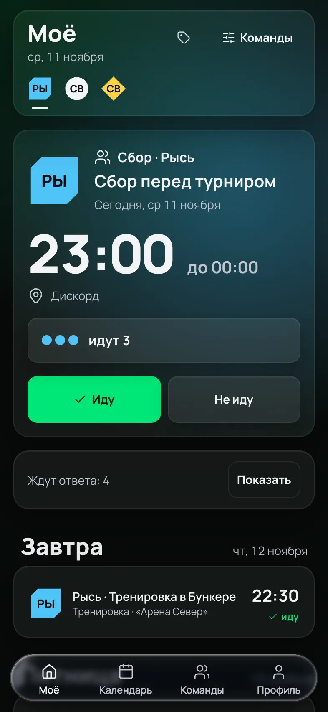
- Шапка — название экрана, кнопка «Команды» и ряд знаков твоих команд.
- Ближайшее событие — крупная карточка: время, место, сколько человек идёт. Если ты ещё не ответил, под ней кнопки «Иду» и «Не иду».
- «Ждут ответа: N» — сколько событий ждут твоего решения. Кнопка «Показать» раскрывает их в ленте, и отвечать можно сразу.
- Лента по дням — все события твоих команд. Знак слева показывает, чьё это событие.
Внизу — панель: Моё Календарь Команды Профиль. Она есть на каждом экране. Кнопка «плюс» между ними нужна тем, кто создаёт события, — у игрока её нет.

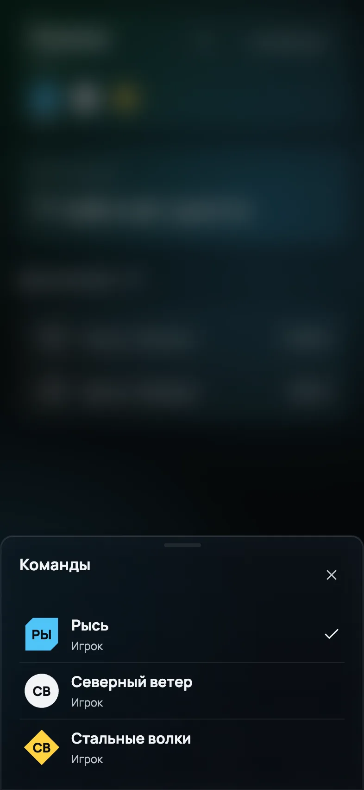
Состав и казна показывают одну команду за раз, а «Моё» и календарь — события всех команд. Переключить её можно знаком в шапке или кнопкой «Команды».
Ответить на событие
Самое частое действие. Отвечать можно с главного экрана, не заходя в событие.

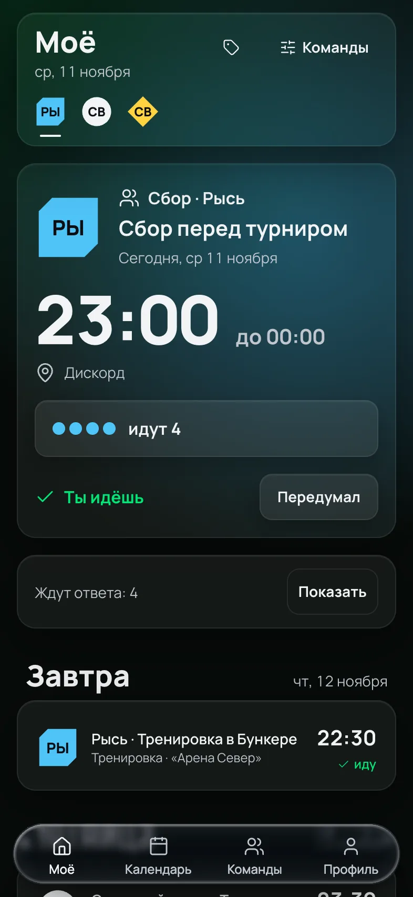

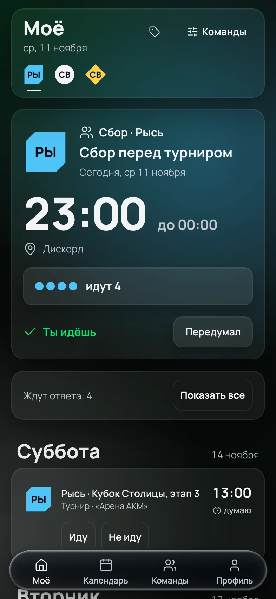
- Иду — тебя считают в составе.
- Не иду — капитан заранее ищет замену, а не в день игры.
- Пока думаю — на экране события; пока ты не решил, оно остаётся в «Ждут ответа».
После ответа вместо кнопок появляется «Ты идёшь» или «Ты не идёшь» и кнопка «Передумал»: нажми её, чтобы ответить заново.
«Иду на все» — для серий
Тренировки часто повторяются: каждый вторник, несколько недель подряд. У такого события есть пометка «Серия». Чтобы не отвечать на каждое занятие, нажми «Иду на все» — ты записан на всю серию сразу. На любом занятии можно отметить «Не приду», а совсем выйти из серии — кнопкой «Выйти».

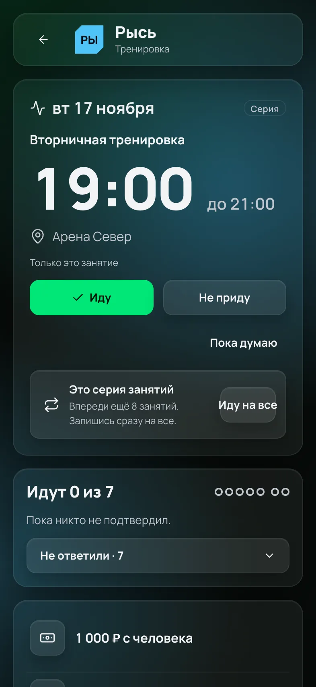

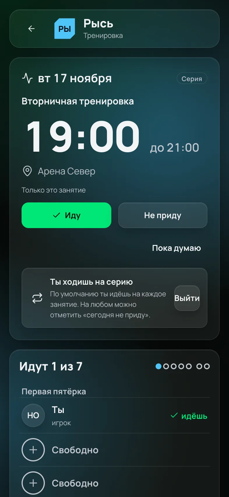
О новом событии, переносе и отмене бот напишет сам. Ответить можно прямо в Telegram — кнопками «Иду» и «Не иду» под сообщением. Не успел ответить — накануне в 19:00 и утром в день события бот напомнит.
Календарь
Вкладка «Календарь» — те же события, но по месяцам. Под датой точки в цветах команд: сразу видно, сколько событий в день и чьи они.

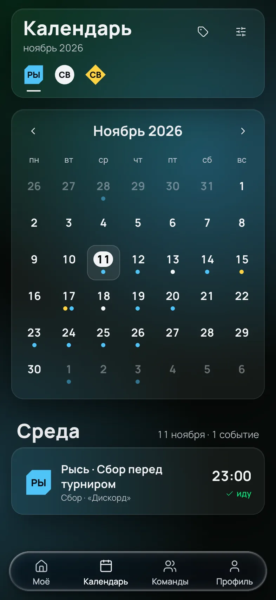

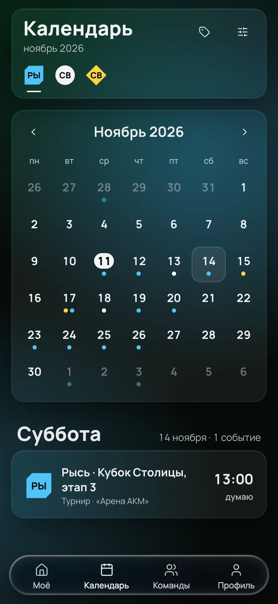
Нажми на дату — под сеткой появятся события этого дня. Нажми на карточку — откроется экран события. Стрелки у названия месяца листают месяцы.
Экран события
Здесь всё про одно событие: когда, где и кто идёт.

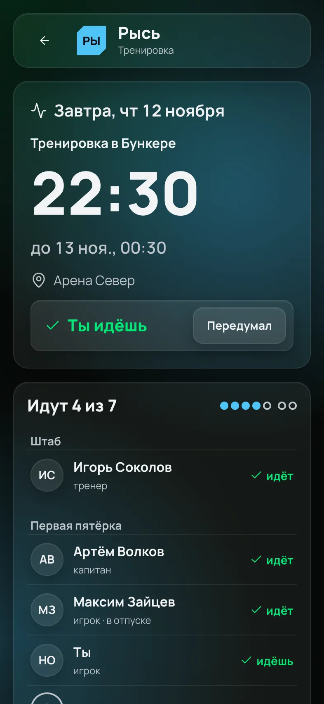
- Вверху — дата, время и место. Если у события есть цена, она написана ниже: «1 500 ₽ с человека».
- «Идут N из M» — точки показывают, сколько мест занято. Люди идут по пятёркам: сначала штаб, потом «Первая пятёрка» и дальше.
- «Свободно» — место ещё не занято. Если ты ещё не ответил, нажми на него — это ответ «Иду».
- «Не ответили» и «Не идут» свёрнуты: нажми на строку, чтобы увидеть имена.
- «Казна команды» — быстрый переход в казну.

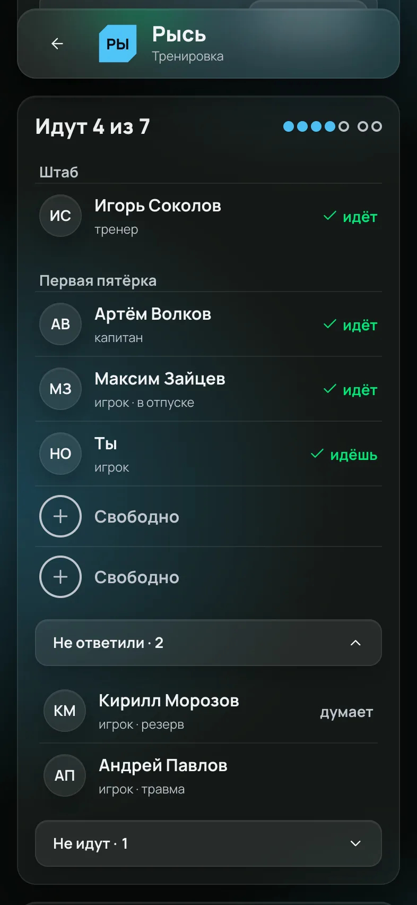
Перед ответом полезно заглянуть сюда: если в списке пусто, а игра завтра, самое время написать в чат.
Расписание игр и счёт
У турнира и других игровых событий есть расписание игр: во сколько какая игра, против кого и в какой паре.

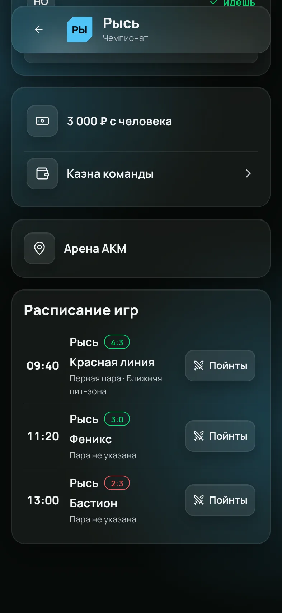
Строка игры читается слева направо: наша команда, счёт, соперник. Наша команда всегда слева.
- 4:3 зелёный счёт — выиграли.
- 2:3 красный — проиграли.
- — серый прочерк — счёт ещё не внесён.
Под строкой написано, в какой паре и в какой пит-зоне играем. Справа кнопка «Пойнты» — вход в разбор игры.
Пойнты
Игра состоит из пойнтов. Счёт 4:3 — это семь пойнтов: четыре наших и три соперника. Приложение само раскладывает счёт на семь строк.

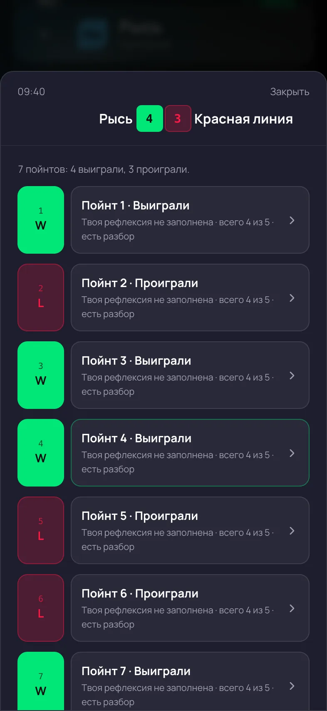
Что в строке:
- Слева — номер пойнта и буква: W выиграли, L проиграли.
- Заголовок — «Пойнт 2 · Проиграли» и статус: «Твоя рефлексия заполнена» или «не заполнена». Рядом «всего 4 из 5» — сколько человек уже заполнили этот пойнт, и «есть разбор», если капитан оставил свой.
- Если капитан не ставил тебя на пойнт, написано «Ты не выходил на этот пойнт» и форма не откроется.
Из счёта известно только, сколько пойнтов выиграно, но не в каком порядке. Порядок отмечают капитан или тренер. У тебя эта кнопка не нажимается — дождись разметки и заполняй рефлексию.
Нажми на строку пойнта — откроется рефлексия.
Рефлексия — пять шагов
Это главное, ради чего всё затевалось. Пять коротких экранов на каждый пойнт — полминуты, если делать по горячим следам.
Шаг 1. Чем закончился пойнт для тебя

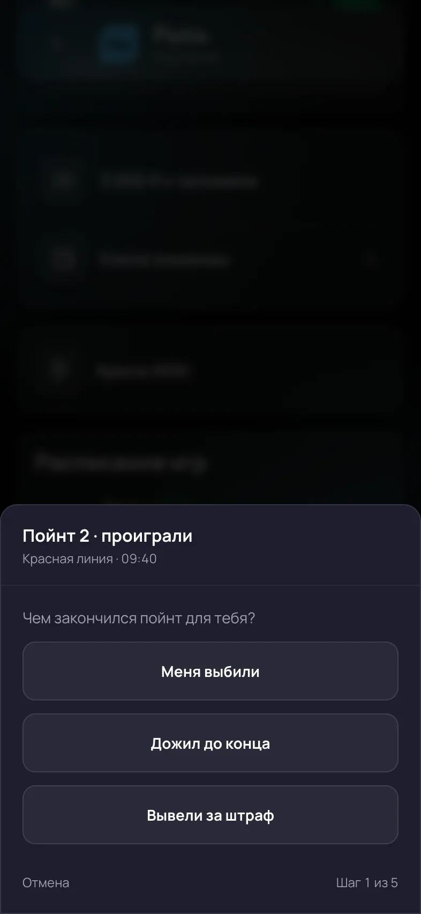
Три варианта: «Меня выбили», «Дожил до конца» и «Вывели за штраф». Если дожил — следующий шаг пропускается. Если штраф — выбери «Мой штраф» (сняли тебя как нарушителя) или «Штраф партнёра» (сняли в довесок, 2-за-1).
Шаг 2. Где и когда тебя выбили

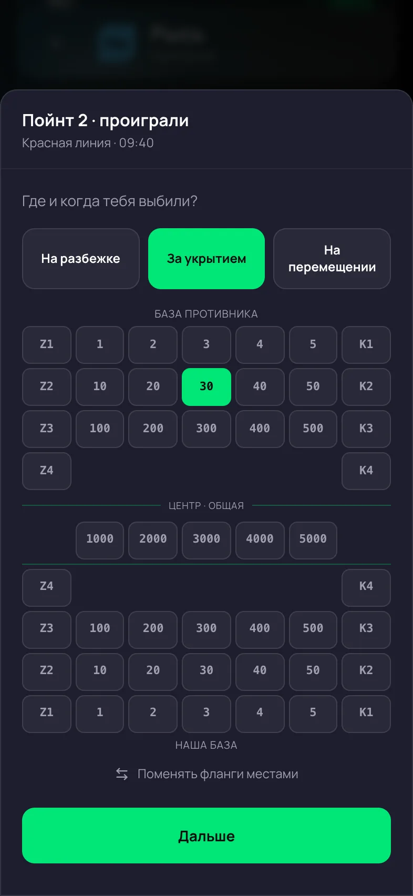
Сначала выбери фазу:
- На разбежке — выбили на старте, до укрытия.
- За укрытием — стоял в точке и там выбили.
- На перемещении — снялся с точки и не доехал.
Потом точку на поле: схема идёт сверху вниз — «База противника», «Центр · общая», «Наша база». Нажми на укрытие, где это случилось. Если схема кажется зеркальной, нажми «Поменять фланги местами», затем «Дальше».
Шаг 3. Скольких выбил ты

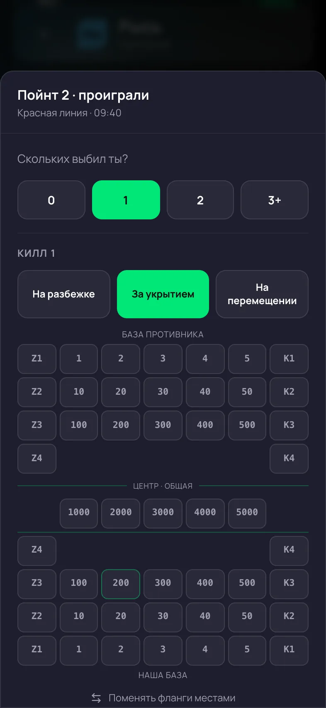
Выбери 0 / 1 / 2 / 3+. Если больше нуля, под кнопками откроется блок на каждого выбитого: «Килл 1», «Килл 2» — со своей фазой и схемой. Отметь, откуда ты его снял. Если выбитых больше трёх, нажми «Добавить ещё килл». Из этих точек потом складывается карта: где команда забирает пойнты, а где горит.
Шаг 4. Как ты отработал

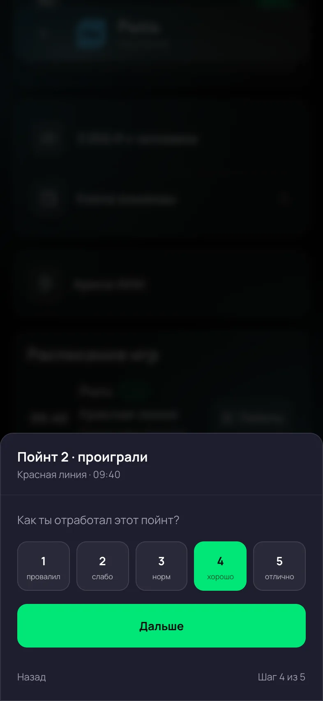
Честная самооценка от 1 — провалил до 5 — отлично. Это про твою работу, а не про результат пойнта: можно проиграть пойнт и отработать на 5. Не хочешь оценивать — нажми «Пропустить».
Шаг 5. Что ещё было важного

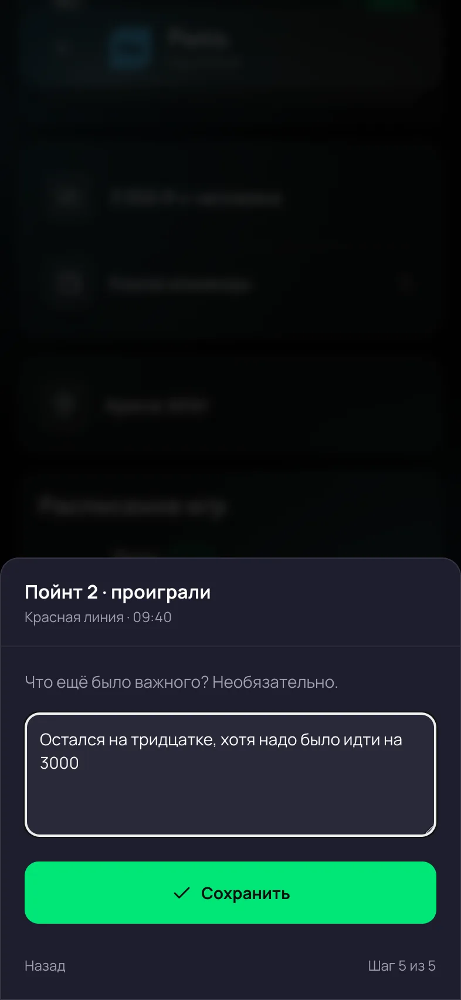
Свободный текст, можно пропустить. Сюда стоит писать то, что кнопками не выразишь: «остался на тридцатке, хотя надо было идти на 3000», «не услышал перекличку».
Нажми «Сохранить» — появится подтверждение: рефлексию видят капитан и тренер, а вернуться и поправить можно в любой момент. Кнопка «К списку пойнтов» вернёт тебя к списку.

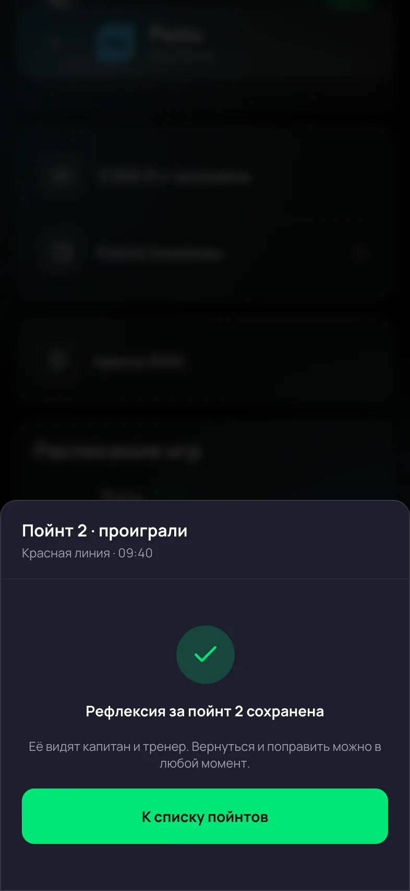
Через неделю ты не вспомнишь, за каким укрытием тебя сняли в четвёртом пойнте третьей игры. Лучше всего — между играми, пока ждёшь свою пару.
Команда и посещаемость
Вкладка «Команды» показывает ту команду, которая выбрана в шапке. Сверху две вкладки: «Состав» и «Посещаемость».
Состав

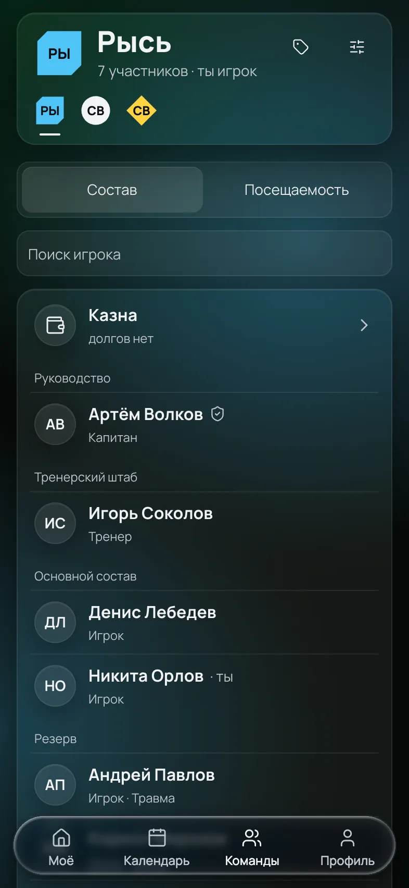
Люди сгруппированы: Руководство, Тренерский штаб, Основной состав, Резерв. У каждого имя и роль, а у тех, кто не в строю, — пометка «Травма», «Запас» или «В отпуске». Сверху — поиск игрока, строка «Казна» ведёт в казну.
Посещаемость

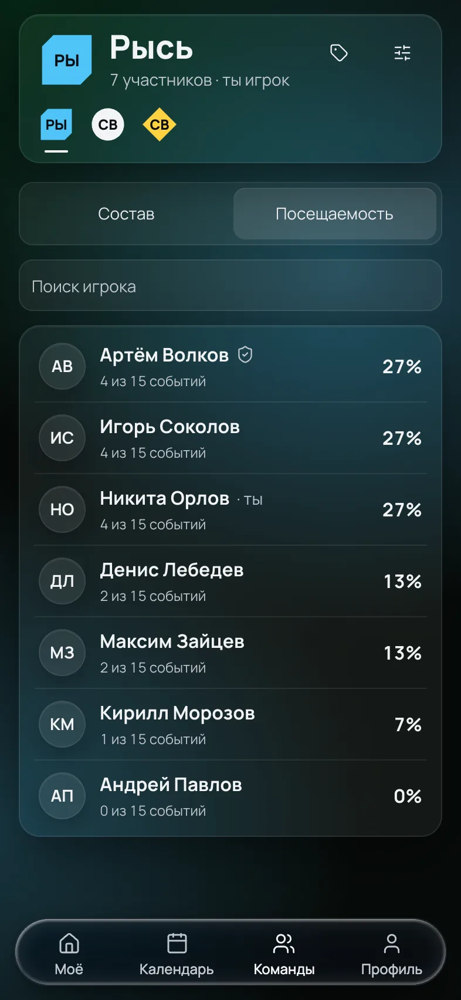
У каждого игрока — процент и «4 из 15 событий». Считается по ответам «Иду». Ещё один довод отвечать вовремя.
Карточка игрока

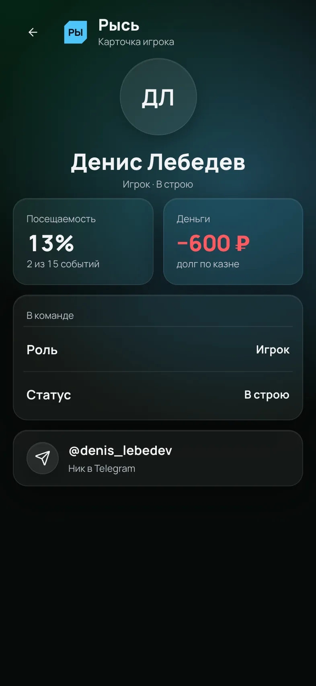
В карточке — посещаемость, баланс по казне («долг по казне», если игрок должен), роль и статус, а ниже ник в Telegram.
Казна
Строка «Казна» на экране команды (и кнопка «Казна команды» на экране события) открывает деньги команды.

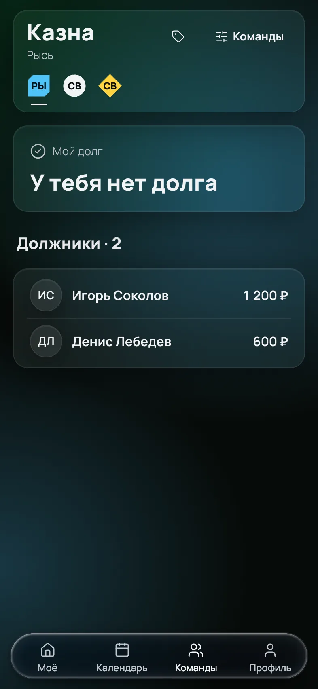
Сверху — «Мой долг»: сколько ты должен команде или «У тебя нет долга». Ниже — «Должники»: кто и сколько должен. Общий остаток и историю операций видит только капитан. Раз в месяц загляни и проверь, нет ли тебя в списке.
Профиль и календарь в телефоне
Вкладка «Профиль» — всё про тебя.

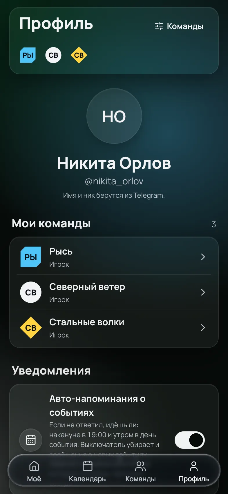
- Мои команды — все команды, где ты играешь; роль написана под названием.
- Уведомления — выключатель «Авто-напоминания о событиях». Если ты не ответил, бот напомнит накануне в 19:00 и утром в день события. Выключатель убирает и сообщения о новых событиях; перенос и отмена событий, на которые ты идёшь, приходят всегда.
- Способы входа — Telegram уже привязан, можно добавить Яндекс.
- Инструкции — эта страница для твоей роли.
- Поддержка — если что-то не работает.

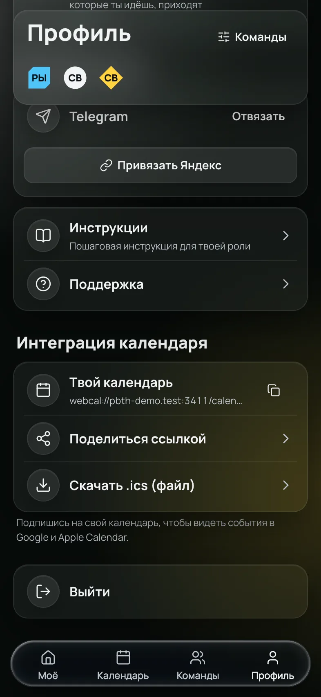
Как добавить события в календарь телефона
- В блоке «Интеграция календаря» нажми значок копирования у строки «Твой календарь» — ссылка
webcal://…скопируется. - iPhone: Настройки → Календарь → Учётные записи → Добавить → Другое → Подписной календарь → вставь ссылку.
Android / Google: calendar.google.com → «Другие календари» → «Подписаться по URL» → вставь ссылку. - Готово: тренировки и игры сами появляются в календаре и напоминают о себе.
«Поделиться ссылкой» отправляет её другу, а «Скачать .ics (файл)» — разовый снимок расписания: он не обновляется. Подписка лучше.
Памятка
- Пришло сообщение о событии: нажми «Иду» или «Не иду». Для серии — «Иду на все».
- Перед игрой: проверь в календаре время и место, загляни в расписание игр.
- Между играми: открой игру → «Пойнты» → заполни рефлексию по своим пойнтам.
- Вечером после игры: догони незаполненное — в списке пойнтов видно, где рефлексия не заполнена.
- Раз в неделю: «Ждут ответа» должно быть равно нулю.
- Раз в месяц: загляни в «Казну» — нет ли долга, и в «Посещаемость» — как идут дела.
Напиши капитану. Если что-то работает не так, как здесь написано, скажи ему — он передаст разработчикам.